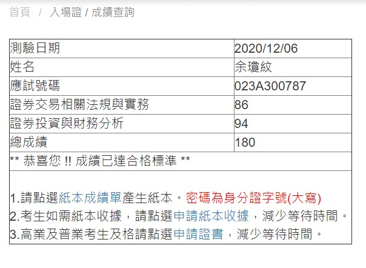

第一篇文章
今天天氣好
第二篇文章
今天天氣壞
第三篇文章
今天天氣普通
google網頁
第二頁
第三頁
人工智慧概論筆記
111-1課表
計算機網路概論心得


- google
- ig
- Youtube
- Facebook
- google
- ig
- Youtube
- Facebook
- google
- ig
- Youtube
- Facebook
| 學生的社團年級成績名字 |
| 學生資料 |
| 社團 |
年級 |
成績 |
名字 |
| 羽毛球 |
三年級 |
70 |
La |
| 籃球 |
一年級 |
90 |
John |
| 日期 |
英文 |
國文 |
| 5/14 |
13:00 |
15:00 |
| 日期 |
英文 |
國文 |
| 5/14 |
13:00 |
15:00 |
- google
- ig
- Youtube
- Facebook
| 日期 |
英文 |
國文 |
| 5/14 |
13:00 |
15:00 |
連結1
連結2
你好
哈哈
div1
div2
span1
span2
帳號:
密碼: